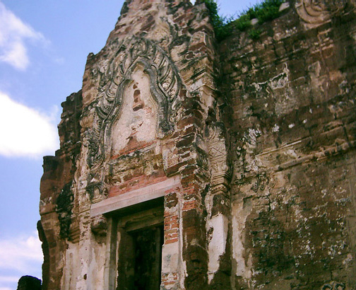
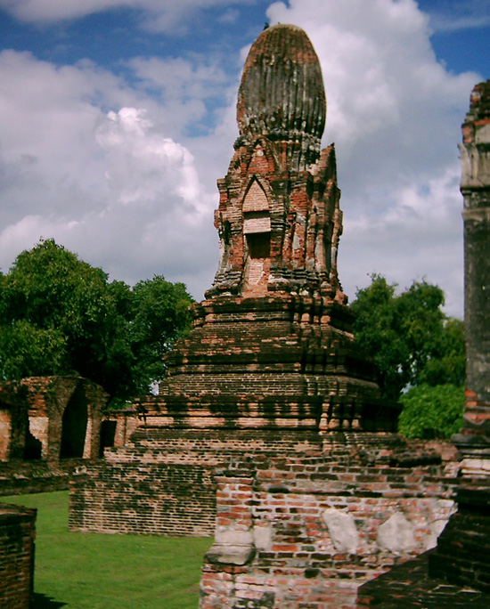
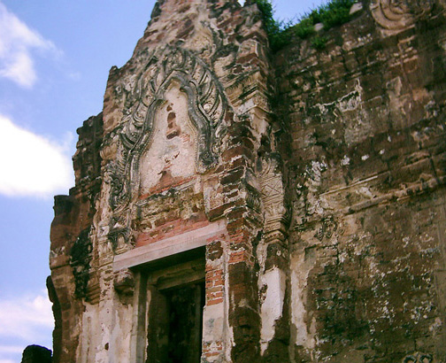

Enjoy!
Bill
------------------------------

Thailand Trav-E-Logs©
| Lopburi |  |
| back: Eastern Thailand | Wat Phra Si Ratana Mahathat |
================================= Took local trains from Buriram on the Eastern Line, changing in Ayuthaya to the Northern Line for Lopburi. Sitting on the bench seat in front of me, a middle- aged gentleman suddenly jumps up and frantically removes his jacket. Out of the sleeve emerges a large black scorpion, which is quickly brushed out the open window. Seems he had left his jacket on the front porch overnight, and neglected to shake it out before putting it on this morning. On a sadder note, this is the last town visited prior to hanging up the wanderlust for awhile. =================================
September 15 - 16, 2003
|
Lopburi's history goes back to the 6th century (as Lavo), but the only site I found interesting dates back to the 10th century. Much of the town, and especially the temples have been inundated with mischievous long-tailed macaques (a type of monkey). This encouraged me to bypass several sites and make a quick exit.  Enjoy! Bill ------------------------------ |
|
Email me at the juno.com address "dancer2SEAsia"
"The traveler discovers that all people are beautiful. It's the governments that are evil."
| next: Impressions |
| back: Eastern Thailand |